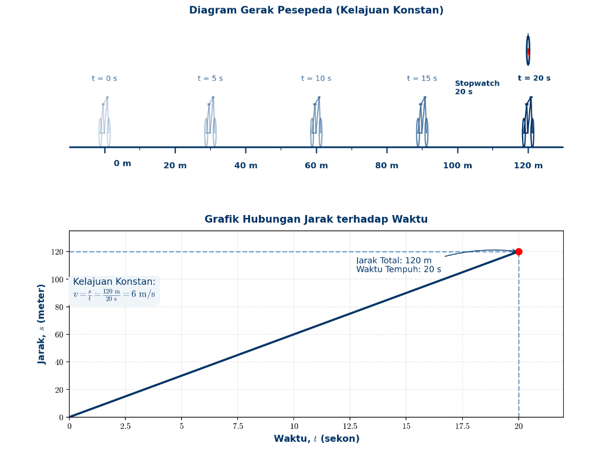
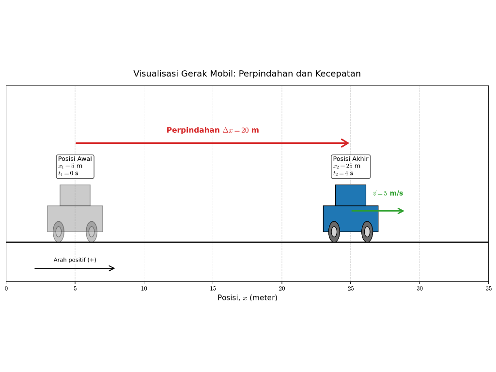

Dalam kehidupan sehari-hari, kita selalu melihat berbagai peristiwa gerak. Siswa berjalan menuju kelas, sepeda melaju di jalan, mobil berhenti di lampu merah, bola ditendang ke udara, air jatuh dari ketinggian, jarum jam berputar, dan satelit bergerak mengelilingi Bumi. Semua peristiwa tersebut dapat dipelajari dalam fisika melalui materi kinematika.
Kinematika adalah cabang fisika yang mempelajari gerak benda tanpa membahas penyebab geraknya. Artinya, pada bab ini kita belum membahas gaya yang menyebabkan benda bergerak. Kita hanya mempelajari bagaimana benda berpindah tempat, seberapa cepat benda bergerak, bagaimana kecepatannya berubah, serta bagaimana bentuk lintasannya.
Materi kinematika penting karena menjadi dasar untuk memahami materi fisika lainnya, seperti gaya, energi, momentum, dan gerak benda dalam kehidupan nyata. Dengan memahami kinematika, siswa dapat menjelaskan mengapa mobil dapat bergerak semakin cepat, mengapa benda jatuh ke bawah, mengapa bola yang ditendang membentuk lintasan melengkung, dan mengapa benda yang bergerak melingkar tetap mengalami percepatan meskipun kelajuannya tetap.
Tujuan Pembelajaran
Setelah mempelajari bab ini, siswa diharapkan mampu:
- Menjelaskan pengertian gerak, titik acuan, posisi, jarak, dan perpindahan.
- Membedakan besaran skalar dan besaran vektor dalam kinematika.
- Menentukan kelajuan, kecepatan, dan percepatan benda.
- Menggunakan persamaan GLB dan GLBB dalam penyelesaian masalah.
- Menganalisis gerak jatuh bebas, gerak vertikal ke atas, dan gerak vertikal ke bawah.
- Menjelaskan gerak parabola sebagai gabungan gerak horizontal dan vertikal.
- Menjelaskan besaran-besaran pada gerak melingkar.
- Menghubungkan konsep kinematika dengan peristiwa dalam kehidupan sehari-hari.
Konsep Dasar Gerak dan Besaran Kinematika
Pengertian Gerak
Suatu benda dikatakan bergerak apabila kedudukannya berubah terhadap suatu titik acuan. Sebaliknya, benda dikatakan diam apabila kedudukannya tidak berubah terhadap titik acuan.
Contohnya, ketika kereta bergerak meninggalkan stasiun, orang yang berdiri di stasiun melihat kereta tersebut bergerak. Namun, penumpang yang duduk di dalam kereta dapat melihat penumpang lain tampak diam karena posisi mereka tidak berubah satu sama lain. Dari contoh tersebut, dapat dipahami bahwa gerak bersifat relatif, yaitu bergantung pada acuan yang digunakan.
Titik acuan adalah titik atau benda yang dianggap tetap untuk menentukan posisi benda lain. Dalam fisika, titik acuan sering dianggap sebagai titik nol (\(x = 0\)). Jika benda berada di sebelah kanan titik acuan, posisinya dapat diberi tanda positif. Jika benda berada di sebelah kiri titik acuan, posisinya diberi tanda negatif.
Kedudukan atau Posisi
Kedudukan atau posisi adalah letak suatu benda terhadap titik acuan pada waktu tertentu. Posisi dapat dinyatakan menggunakan garis bilangan, koordinat, atau vektor posisi.
Pada gerak satu dimensi, posisi benda biasanya dinyatakan pada satu sumbu, misalnya sumbu-x.

Kedudukan atau Posisi
Jarak
Jarak adalah panjang seluruh lintasan yang ditempuh oleh benda selama bergerak. Jarak termasuk besaran skalar, karena hanya memiliki nilai dan tidak memiliki arah.
Contoh: Seorang siswa berjalan 10 meter ke timur, lalu kembali 4 meter ke barat. Jarak total yang ditempuh siswa adalah:

Jarak vs. Perpindahan Apa Bedanya?
Jadi, jarak yang ditempuh siswa adalah 14 meter.
Perpindahan
Perpindahan adalah perubahan posisi benda dari titik awal ke titik akhir. Berbeda dengan jarak, perpindahan hanya memperhatikan posisi awal dan posisi akhir, bukan seluruh lintasan yang ditempuh. Perpindahan termasuk besaran vektor karena memiliki nilai dan arah.
Rumus perpindahan pada gerak satu dimensi adalah:
Keterangan: \(\Delta x\) = perpindahan; \(x_1\) = posisi awal; \(x_2\) = posisi akhir
Jadi, perpindahan benda adalah 10 m ke arah positif.
Tanda negatif menunjukkan bahwa benda berpindah ke arah negatif.
Perbedaan Jarak dan Perpindahan
Jarak dan perpindahan sering dianggap sama, padahal keduanya berbeda. Jarak adalah panjang lintasan, sedangkan perpindahan adalah perubahan posisi dari awal ke akhir.

| Aspek | Jarak | Perpindahan |
|---|---|---|
| Pengertian | Panjang seluruh lintasan | Perubahan posisi dari awal ke akhir |
| Jenis besaran | Skalar | Vektor |
| Memiliki arah | Tidak | Ya |
| Bergantung lintasan | Ya | Tidak |
| Nilai | Selalu positif atau nol | Bisa positif, negatif, atau nol |
Contoh: Seseorang berjalan 10 m ke timur, lalu 4 m ke barat. Maka jarak tempuh: \(s = 10 + 4 = 14\,\text{m}\), sedangkan perpindahan: \(\Delta x = 10 - 4 = 6\,\text{m}\). Jadi, jaraknya 14 m, sedangkan perpindahannya 6 m ke timur.
Jika seseorang berjalan mengelilingi lapangan dan kembali ke titik awal, maka jaraknya tidak nol karena ia menempuh lintasan tertentu. Namun, perpindahannya nol karena posisi awal dan posisi akhirnya sama.
Jarak vs Perpindahan
Besaran Skalar dan Vektor
Dalam kinematika, ada dua jenis besaran yang sering digunakan, yaitu besaran skalar dan besaran vektor.
Besaran skalar adalah besaran yang hanya memiliki nilai, tetapi tidak memiliki arah. Contoh besaran skalar adalah jarak, kelajuan, waktu, massa, suhu, dan energi.
Besaran vektor adalah besaran yang memiliki nilai dan arah. Contoh besaran vektor adalah perpindahan, kecepatan, percepatan, dan gaya.
Contoh perbedaan: "Mobil menempuh jarak 100 km." Kalimat tersebut hanya menunjukkan nilai, sehingga termasuk besaran skalar. "Mobil berpindah 100 km ke arah timur." Kalimat tersebut menunjukkan nilai dan arah, sehingga termasuk besaran vektor.
Kelajuan
Kelajuan adalah jarak yang ditempuh benda tiap satuan waktu. Kelajuan tidak memperhatikan arah gerak, sehingga termasuk besaran skalar. Kelajuan rata-rata dirumuskan sebagai:

Keterangan: \(v\) = kelajuan rata-rata (m/s); \(s\) = jarak total (m); \(t\) = waktu tempuh (s)
Contoh: Seorang siswa bersepeda menempuh jarak 120 m dalam waktu 20 s. Kelajuan rata-ratanya adalah \(v = 120/20 = 6\,\text{m/s}\).
Kecepatan
Kecepatan adalah perpindahan benda tiap satuan waktu. Kecepatan termasuk besaran vektor karena bergantung pada perpindahan yang memiliki arah. Kecepatan rata-rata dirumuskan sebagai:

Keterangan: \(v_{\text{rata-rata}}\) = kecepatan rata-rata; \(\Delta x\) = perpindahan; \(\Delta t\) = selang waktu
Contoh: Sebuah benda bergerak dari posisi 5 m ke posisi 25 m dalam waktu 4 s. Kecepatan rata-ratanya adalah \(v_{\text{rata-rata}} = (25 - 5)/4 = 5\,\text{m/s}\). Jadi, kecepatan rata-rata benda adalah 5 m/s ke arah positif.
Kelajuan dan Kecepatan Sesaat
Kelajuan sesaat adalah besar kelajuan benda pada saat tertentu. Contoh alat yang menunjukkan kelajuan sesaat adalah speedometer pada kendaraan.
Kecepatan sesaat adalah kecepatan benda pada waktu tertentu. Jika posisi benda dinyatakan sebagai fungsi waktu \(x(t)\), maka kecepatan sesaat dapat ditulis:
Arti dari persamaan tersebut yaitu kecepatan sesaat adalah perubahan posisi yang terjadi dalam selang waktu yang sangat kecil.
Percepatan
Percepatan adalah perubahan kecepatan tiap satuan waktu. Benda dikatakan mengalami percepatan jika kecepatannya berubah. Perubahan kecepatan dapat berupa bertambah cepat, melambat, atau berubah arah. Percepatan rata-rata dirumuskan sebagai:
Keterangan: \(a\) = percepatan (m/s²); \(v_1\) = kecepatan awal; \(v_2\) = kecepatan akhir; \(\Delta t\) = selang waktu
Contoh: Sebuah mobil mula-mula bergerak dengan kecepatan 5 m/s. Setelah 4 s, kecepatannya menjadi 25 m/s. Percepatan mobil adalah \(a = (25 - 5)/4 = 5\,\text{m/s}^2\). Artinya, setiap sekon atau detik kecepatan mobil bertambah 5 m/s.
Jika percepatan searah dengan kecepatan, benda akan semakin cepat (percepatan positif). Jika percepatan berlawanan arah dengan kecepatan, benda akan melambat (percepatan negatif).
Gerak Lurus dan Gerak Vertikal
Gerak Lurus
Gerak lurus adalah gerak benda yang lintasannya berupa garis lurus. Gerak lurus dapat terjadi pada jalan datar, lintasan kereta, benda jatuh, atau benda yang bergerak naik turun secara vertikal. Dalam pembahasan kinematika, gerak lurus dibagi menjadi dua jenis utama, yaitu:
- Gerak Lurus Beraturan atau GLB.
- Gerak Lurus Berubah Beraturan atau GLBB.
Gerak Lurus Beraturan (GLB)
Gerak Lurus Beraturan atau GLB adalah gerak benda pada lintasan lurus dengan kecepatan tetap. Karena kecepatannya tetap, benda tidak mengalami percepatan (\(a = 0\)).
Ciri-ciri GLB:
- lintasannya lurus,
- kecepatannya tetap, percepatannya nol,
- benda menempuh jarak yang sama dalam selang waktu yang sama.

Keterangan: \(s\) = jarak atau perpindahan (m); \(v\) = kecepatan (m/s); \(t\) = waktu (s)
Contoh: Sebuah mobil bergerak lurus dengan kecepatan tetap 20 m/s selama 10 s. Jarak yang ditempuh mobil adalah \(s = v\,t = 20 \times 10 = 200\,\text{m}\). Jadi, mobil menempuh jarak 200 m.
Grafik pada GLB
Pada GLB, grafik posisi terhadap waktu berbentuk garis lurus. Semakin curam garisnya, semakin besar kecepatan benda.
Pada grafik kecepatan terhadap waktu, bentuk grafiknya berupa garis mendatar karena kecepatan benda tetap.
Pada grafik \(v\)–\(t\), luas daerah di bawah grafik menunjukkan jarak atau perpindahan.
Gerak Lurus Berubah Beraturan (GLBB)
Gerak Lurus Berubah Beraturan atau GLBB adalah gerak benda pada lintasan lurus dengan percepatan tetap. Pada GLBB, kecepatan benda berubah secara teratur.
Jika kecepatan benda bertambah secara teratur, geraknya disebut GLBB dipercepat. Jika kecepatan benda berkurang secara teratur, geraknya disebut GLBB diperlambat.
Ciri-ciri GLBB:
- lintasannya lurus,
- percepatannya tetap,
- kecepatan berubah secara teratur,
- grafik kecepatan terhadap waktu berbentuk garis lurus.
Keterangan: \(v_0\) = kecepatan awal (m/s); \(v_t\) = kecepatan akhir (m/s); \(a\) = percepatan (m/s²); \(t\) = waktu (s); \(s\) = perpindahan atau jarak pada lintasan lurus (m)
Sebuah motor mula-mula diam, kemudian bergerak dengan percepatan tetap \(2\,\text{m/s}^2\) selama 5 s. Tentukan kecepatan akhir dan jarak yang ditempuh.
\(v_0 = 0\) (motor mula-mula diam) · \(a = 2\,\text{m/s}^2\) · \(t = 5\,\text{s}\)
Kecepatan akhir. \(v_t = v_0 + a\,t = 0 + 2(5) = 10\,\text{m/s}\).
Jarak. \(s = v_0\,t + \tfrac12 a\,t^2 = 0(5) + \tfrac12 (2)(5^2) = 25\,\text{m}\).
GLB & GLBB — grafik kecepatan-waktu
Gerak Vertikal
Gerak vertikal adalah gerak benda pada arah atas atau bawah yang dipengaruhi oleh gravitasi. Di dekat permukaan Bumi, percepatan gravitasi biasanya dinyatakan \(g = 9{,}8\,\text{m/s}^2\). Dalam banyak soal, nilai tersebut sering dibulatkan menjadi \(g = 10\,\text{m/s}^2\).
Arah gravitasi selalu ke bawah. Oleh karena itu, benda yang bergerak vertikal akan mengalami percepatan ke bawah.
Gerak vertikal dapat dibagi menjadi tiga jenis:
- Gerak jatuh bebas.
- Gerak vertikal ke bawah.
- Gerak vertikal ke atas.
Gerak Jatuh Bebas
Gerak jatuh bebas adalah gerak benda yang jatuh dari ketinggian tertentu tanpa kecepatan awal. Pada gerak ini, benda hanya dipengaruhi oleh gravitasi jika hambatan udara diabaikan.
Ciri-ciri gerak jatuh bebas:
- Kecepatan awal sama dengan nol: \(v_0 = 0\)
- Percepatan sama dengan percepatan gravitasi: \(a = g\)
Maka persamaannya adalah:
Keterangan: \(h\) = ketinggian atau jarak jatuh (m); \(g\) = percepatan gravitasi (m/s²); \(t\) = waktu jatuh (s); \(v_t\) = kecepatan pada waktu \(t\)
Sebuah batu dijatuhkan dari ketinggian 45 m. Jika \(g = 10\,\text{m/s}^2\), tentukan waktu yang dibutuhkan batu untuk sampai ke tanah.
\(h = \tfrac12 g\,t^2\) → \(45 = \tfrac12 (10)\,t^2\)
\(45 = 5t^2\) → \(t^2 = 9\) → \(t = 3\,\text{s}\)
Gerak Vertikal ke Bawah
Gerak vertikal ke bawah adalah gerak benda yang dilempar ke bawah dengan kecepatan awal tertentu. Berbeda dari gerak jatuh bebas, gerak vertikal ke bawah memiliki kecepatan awal.
Ciri-cirinya:
- Memiliki kecepatan awal: \(v_0 \neq 0\)
- Percepatan benda sama dengan percepatan gravitasi: \(a = g\)
Persamaannya adalah:
Contoh peristiwa gerak vertikal ke bawah adalah bola yang dilempar dari atas gedung ke arah bawah. Bola sudah memiliki kecepatan awal, kemudian kecepatannya bertambah karena pengaruh gravitasi.
Gerak Vertikal ke Atas
Gerak vertikal ke atas adalah gerak benda yang dilempar ke atas dengan kecepatan awal tertentu. Ketika benda bergerak ke atas, arah geraknya berlawanan dengan arah gravitasi. Akibatnya, kecepatan benda semakin lama semakin kecil.
Jika arah ke atas dianggap positif, maka percepatan gravitasi bernilai negatif \(a = -g\).

Pada titik tertinggi, kecepatan benda sesaat menjadi nol: \(v_t = 0\). Maka tinggi maksimum:
Jika benda kembali ke posisi awal, waktu total di udara adalah:
Sebuah bola dilempar vertikal ke atas dengan kecepatan awal 20 m/s. Jika \(g = 10\,\text{m/s}^2\), tentukan tinggi maksimum bola.
\(\displaystyle h_{\text{maks}} = \frac{v_0^{\,2}}{2g} = \frac{20^2}{2(10)} = \frac{400}{20} = 20\,\text{m}\).
Gerak Vertikal
Gerak Dua Dimensi dan Gerak Melingkar
Gerak Dua Dimensi
Pada gerak satu dimensi, benda hanya bergerak pada satu garis lurus. Namun, dalam kehidupan sehari-hari banyak benda bergerak pada dua arah sekaligus. Contohnya, bola yang ditendang melambung bergerak ke depan sekaligus ke atas, lalu turun kembali. Gerak seperti ini disebut gerak dua dimensi.
Gerak dua dimensi dapat dianalisis dengan memisahkan gerak pada dua sumbu yang saling tegak lurus, yaitu sumbu-x = arah horizontal dan sumbu-y = arah vertikal.
Salah satu contoh penting gerak dua dimensi adalah gerak parabola.
Gerak Parabola
Gerak parabola adalah gerak benda yang lintasannya berbentuk parabola. Gerak ini terjadi karena perpaduan dua gerak, yaitu GLB pada arah horizontal dan GLBB pada arah vertikal. Pada arah horizontal, benda bergerak dengan kecepatan tetap. Pada arah vertikal, benda dipengaruhi oleh percepatan gravitasi.
Contoh gerak parabola dalam kehidupan sehari-hari:
- bola basket yang dilempar ke ring,
- bola sepak yang ditendang melambung,
- peluru yang ditembakkan dengan sudut tertentu.
Pada gerak parabola, hambatan udara biasanya diabaikan agar gerak lebih mudah dianalisis.

Komponen Kecepatan Awal pada Gerak Parabola
Jika benda dilempar dengan kecepatan awal \(v_0\) dan sudut elevasi \(\theta\) (sudut yang dibentuk terhadap sumbu-x), maka kecepatan awal dapat diuraikan menjadi dua komponen.
Keterangan: \(v_0\) = kecepatan awal; \(\theta\) = sudut elevasi; \(v_{0x}\) = kecepatan awal pada sumbu-x; \(v_{0y}\) = kecepatan awal pada sumbu-y
Gerak pada Sumbu-x
Pada sumbu-x, benda bergerak dengan kecepatan tetap karena tidak ada percepatan horizontal jika hambatan udara diabaikan. Sehingga kecepatan awal pada sumbu-x akan sama dengan kecepatan pada sumbu-x pada waktu kapanpun, sehingga \(v_x = v_{0x}\). Maka kecepatan horizontal (arah-x):
Posisi horizontal setelah waktu \(t\) menggunakan rumus GLB:
Gerak pada Sumbu-y
Pada sumbu-y, benda dipengaruhi oleh gravitasi. Karena gravitasi arahnya ke bawah, maka gerak pada sumbu-y merupakan GLBB. Kecepatan vertikal (sumbu-y) setelah waktu \(t\):
Posisi vertikal (sumbu-y) setelah waktu \(t\):
Kecepatan Benda pada Gerak Parabola
Pada gerak parabola, kecepatan benda merupakan gabungan dari kecepatan horizontal dan kecepatan vertikal. Besar kecepatan benda:
Arah kecepatan terhadap horizontal:
Titik Tertinggi pada Gerak Parabola
Pada titik tertinggi, benda masih memiliki kecepatan horizontal, tetapi kecepatan vertikalnya sesaat menjadi nol \(v_y = 0\). Waktu untuk mencapai titik tertinggi:
Tinggi maksimum:
Jangkauan Mendatar
Jangkauan mendatar adalah jarak terjauh yang dicapai benda pada arah horizontal. Jika benda kembali ke ketinggian semula (menyentuh tanah), jangkauan mendatar dapat dihitung dengan:
Keterangan: \(R\) = jangkauan mendatar; \(v_0\) = kecepatan awal; \(\theta\) = sudut elevasi; \(g\) = percepatan gravitasi
Sebuah bola ditendang dengan kecepatan awal 20 m/s dan sudut elevasi 30°. Tentukan komponen kecepatan awal pada sumbu-x dan sumbu-y.
\(v_0 = 20\,\text{m/s}\) · \(\theta = 30^\circ\)
Komponen horizontal (sumbu-x). \(v_{0x} = v_0 \cos\theta = 20 \cos 30^\circ = 20\left(\tfrac{\sqrt3}{2}\right) = 10\sqrt3\,\text{m/s}\).
Komponen vertikal (sumbu-y). \(v_{0y} = v_0 \sin\theta = 20 \sin 30^\circ = 20\left(\tfrac12\right) = 10\,\text{m/s}\).
Luncurkan proyektil (gerak parabola)
Gerak Melingkar
Gerak melingkar adalah gerak benda pada lintasan berbentuk lingkaran. Jika benda bergerak pada lintasan lingkaran dengan kelajuan tetap, geraknya disebut Gerak Melingkar Beraturan atau GMB.
Contoh gerak melingkar:
- roda sepeda berputar,
- jarum jam bergerak,
- benda yang diikat tali lalu diputar,
- satelit mengelilingi planet.
Pada gerak melingkar beraturan, kelajuan benda tetap, tetapi arah kecepatannya selalu berubah. Karena arah kecepatan berubah, benda tetap mengalami percepatan. Percepatan ini disebut percepatan sentripetal, yaitu percepatan yang arahnya selalu menuju pusat lingkaran.
Periode dan Frekuensi
Periode adalah waktu yang diperlukan benda untuk melakukan satu putaran penuh.
Keterangan: \(T\) = periode (s); \(t\) = waktu total (s); \(n\) = jumlah putaran
Frekuensi adalah banyaknya putaran yang dilakukan benda setiap sekon.
Keterangan: \(f\) = frekuensi (Hz)
Hubungan periode dan frekuensi adalah:
Kecepatan Sudut
Kecepatan sudut adalah besar sudut yang ditempuh benda tiap satuan waktu. Kecepatan sudut dilambangkan dengan \(\omega\).
Untuk satu putaran penuh, sudut yang ditempuh adalah \(2\pi\) radian. Maka:
Karena \(f = 1/T\), maka:
Keterangan: \(\omega\) = kecepatan sudut (rad/s); \(\theta\) = sudut tempuh (rad); \(T\) = periode (s); \(f\) = frekuensi (Hz)
Kelajuan Linear pada Gerak Melingkar
Kelajuan linear adalah kelajuan benda sepanjang lintasan lingkaran. Jika benda bergerak satu putaran penuh, jarak yang ditempuh adalah keliling lingkaran.

Kelajuan linear dapat ditentukan dengan persamaan:
Kelajuan linear juga berhubungan dengan kecepatan sudut:
Keterangan: \(v\) = kelajuan linear (m/s); \(R\) = jari-jari lintasan (m); \(\omega\) = kecepatan sudut (rad/s)
Percepatan Sentripetal
Pada gerak melingkar beraturan, kelajuan benda tetap, tetapi arah kecepatannya selalu berubah. Karena kecepatan merupakan besaran vektor, perubahan arah kecepatan berarti benda mengalami percepatan.
Percepatan pada gerak melingkar disebut percepatan sentripetal. Arah percepatan sentripetal selalu menuju pusat lingkaran. Rumus percepatan sentripetal:

Keterangan: \(a_s\) = percepatan sentripetal (m/s²); \(v\) = kelajuan linear (m/s); \(R\) = jari-jari lintasan (m); \(\omega\) = kecepatan sudut (rad/s)
Sebuah roda berjari-jari 0,5 m berputar dengan kecepatan sudut 4 rad/s. Tentukan kelajuan linear titik pada tepi roda.
\(R = 0{,}5\,\text{m}\) · \(\omega = 4\,\text{rad/s}\)
\(v = \omega R = 4(0{,}5) = 2\,\text{m/s}\).
Gerak Melingkar Beraturan
Latihan
Uji pemahamanmu
Seorang siswa berjalan 10 m ke timur, lalu 4 m ke barat. Perpindahan siswa adalah…
Berikut yang termasuk besaran vektor adalah…
Ciri utama Gerak Lurus Beraturan (GLB) adalah…
Sebuah batu dijatuhkan dari ketinggian 45 m (\(g = 10\,\text{m/s}^2\)). Waktu yang dibutuhkan batu sampai ke tanah adalah…
Bola dilempar vertikal ke atas dengan kecepatan awal 20 m/s (\(g = 10\,\text{m/s}^2\)). Tinggi maksimumnya adalah…
Pada titik tertinggi lintasan parabola, kecepatan vertikal benda…
Sebuah roda berjari-jari 0,5 m berputar dengan kecepatan sudut 4 rad/s. Kelajuan linear titik di tepi roda adalah…